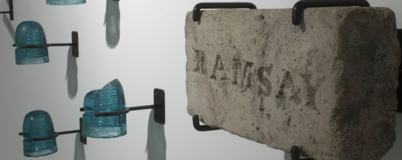

ANTICOSTE
L’exposition Anticoste propose une série de regards où divers points de vue sur l’Île et son
histoire se croisent et se confrontent dans une série de récits de l’entre-deux.
Issus
des pages
racornies, des images perdues, des pierres abandonnées et de toutes ces choses que l’on croyait
oubliées,
ces récits nous font naviguer entre chaos et utopie, entre beauté et hideur, entre raison et
déraison.
SEPT RÉCITS NUMÉRIQUES
Anticoste présente le volet numérique de l’exposition de l’artiste Richard Baillargeon. La rose des vents permet de naviguer vers sept récits numériques qui présentent autant de facettes mythiques de l’Île Anticosti. Chacun de ces récits expose une succession de photographies, de citations et de documents d’archives.
